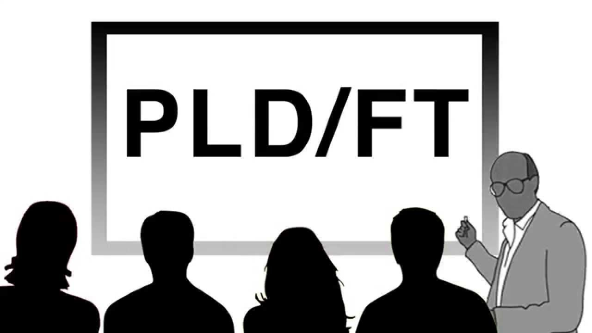
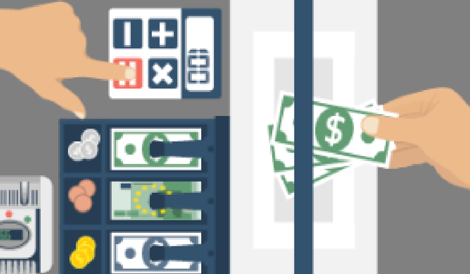
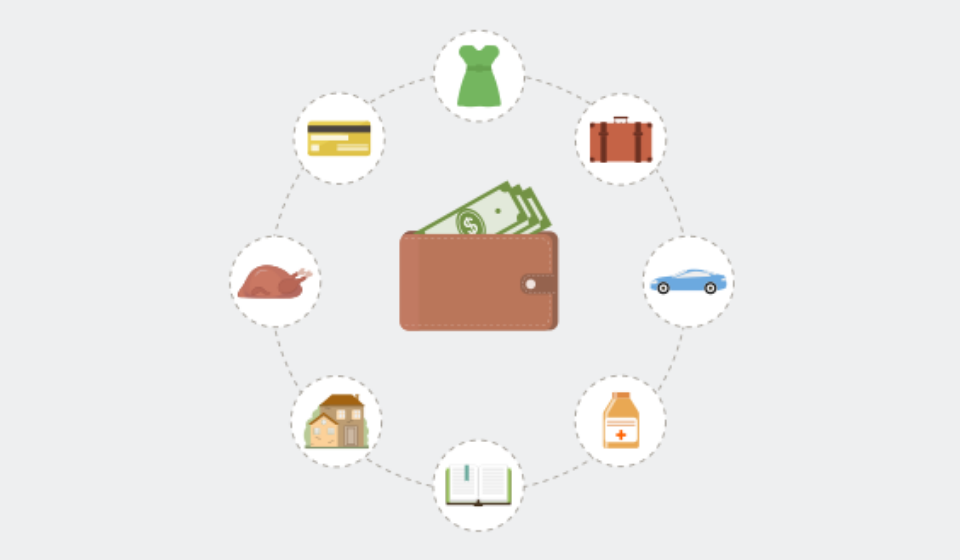
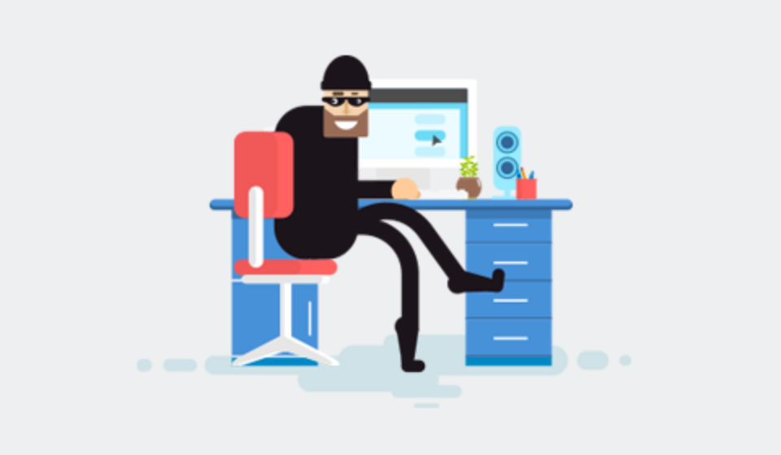
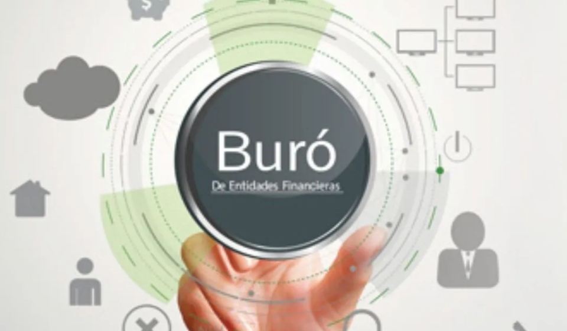
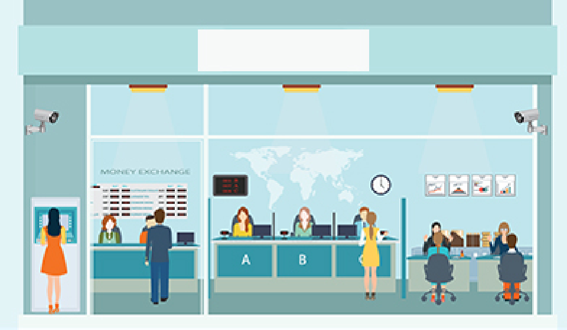
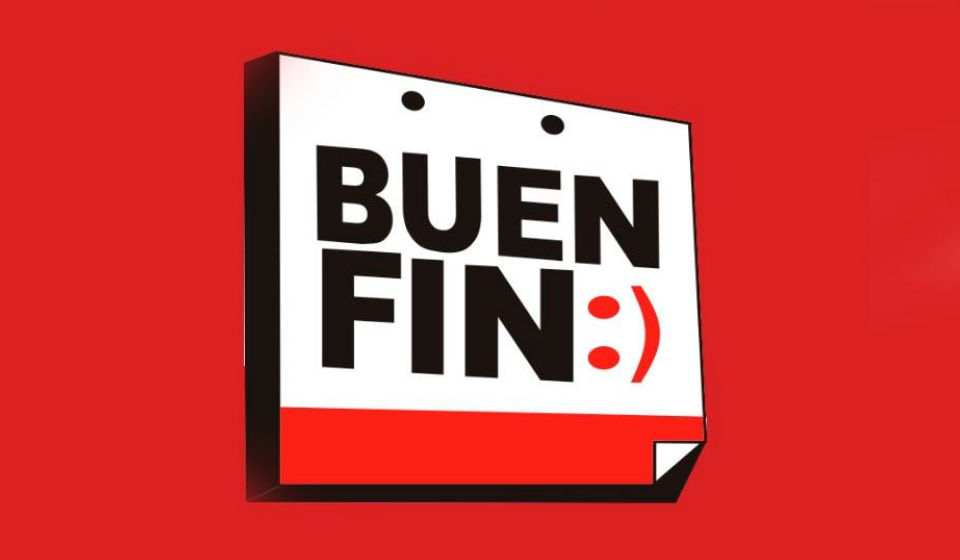

Guía para el cumplimiento de las obligaciones en materia de PLD/FT
¿Te has puesto a pensar en tu economía cuando llegue el momento de tu retiro? Es un tema que no pasar desapercibido sin importar la edad que tengas. Por ello te damos tres opciones [...]
Seguramente en más de una ocasión has recibido información de empresas que ofrecen préstamos en internet inmediatos, sin importar la cantidad y con trámites muy sencillos. Procura tener cuidado [...]
El robo de identidad es un delito que ha ido en aumento en últimas fechas. Por ello, te dejamos una serie de recomendaciones [...]
Con la idea de mejorar el nivel de vida, hay personas que optan por irse de su país de origen a otro. A este fenómeno se le conoce como migración, y principalmente lo hacen para [...]
Desde el 2011 se puso en marcha el programa llamado El Buen Fin, con el cual se busca reactivar la economía del país así como el [...]
Ya estamos en los últimos meses del año y vienen consigo promociones de fin de temporada, ventas especiales como El Buen Fin y las fiestas decembrinas, momentos en los que se antoja comprar infinidad de bienes y productos, pero recuerda que para no tener problemas económicos en un futuro, [...]
Las inversiones serán una forma con la que puedes hacer crecer tu dinero. Pero para que esto suceda, es necesario que consideres lo siguiente: [...]
¿Cuántas veces no has escuchado hablar sobre los créditos y cómo es que éstos pueden ayudarte en la adquisición de algún bien o pagar servicios?, seguramente más de una. En esta ocasión, te hablaremos sobre los microcréditos, ¿sabes cómo funcionan? [...]
Es importante que al ser una entidad que ofrece servicios de ahorro, crédito e inversión, tomes algunas precauciones para que gente ajena a tu empresa, no haga mal uso de tu imagen o de la [...]
Actualmente la CONDUSEF pone a tu disposición una herramienta en Internet que permite revisar la situación de la Banca Mexicana. De esta manera, podrás conocer ampliamente en qué institución te conviene más solicitar productos financieros: te hablamos del Buró de Entidades Financieras. [...]
Si ya cuentas con una tarjeta de crédito, hay varios conceptos que te sugerimos conozcas. [...]
Un seguro siempre será un servicio que ayude a salir de alguna situación inesperada ya sea en casa, en aspectos de salud, o en empresas. Por ello, en esta ocasión, hablaremos de [...]
Uno de los términos manejados en el ambiente financiero es el factoraje. Éste, puede ser visto como una alternativa que permite disponer anticipadamente de las cuentas por cobrar. En esta actividad participan tres actores: la empresa de factoraje, el vendedor o cliente y el deudor. [...]
¿Sabes qué hacer si tu negocio cae en problemas financieros? No entres en crisis, te compartimos algunas recomendaciones [...]
Quizás hiciste varios gastos en las pasadas fiestas decembrinas y eso está generando problemas en tus bolsillos, sí, la cuesta de enero está haciendo de las suyas. No te preocupes te damos algunos tips [...]
Estamos ya por terminar el año y es un buen momento para que comiences a elaborar tu presupuesto. Te presentamos algunas recomendaciones [...]
El Buen Fin está cerca y te damos algunos tips para cuidar tu cartera. [...]
¿Has escuchado hablar de los gastos hormiga? Son aquellos que realizamos a lo largo del día, de la semana o del mes, a los que no le ponemos atención por ser cotidianos, como comprar café todas las mañanas, cigarros sueltos, megas para navegar en Internet, insumos de oficina, entre otros, pero, ¿sabes cómo fumigarlos? [...]
Al momento de hacer transacciones bancarias en línea, presta mucha atención a la información que proporcionas. Te dejamos algunos tips de seguridad. [...]